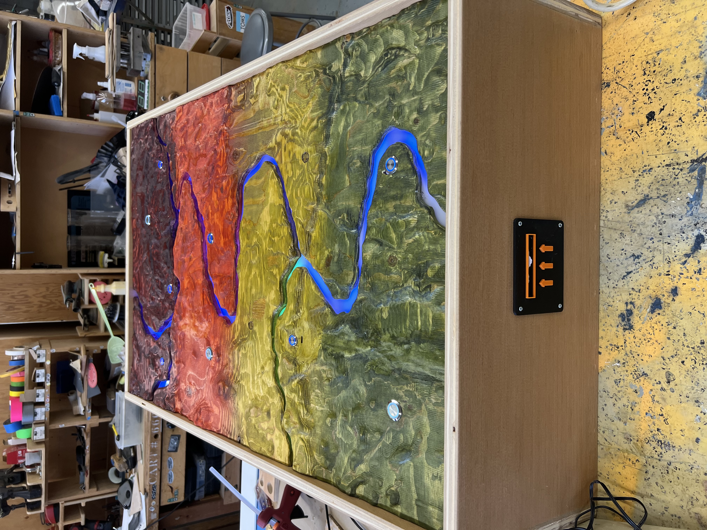
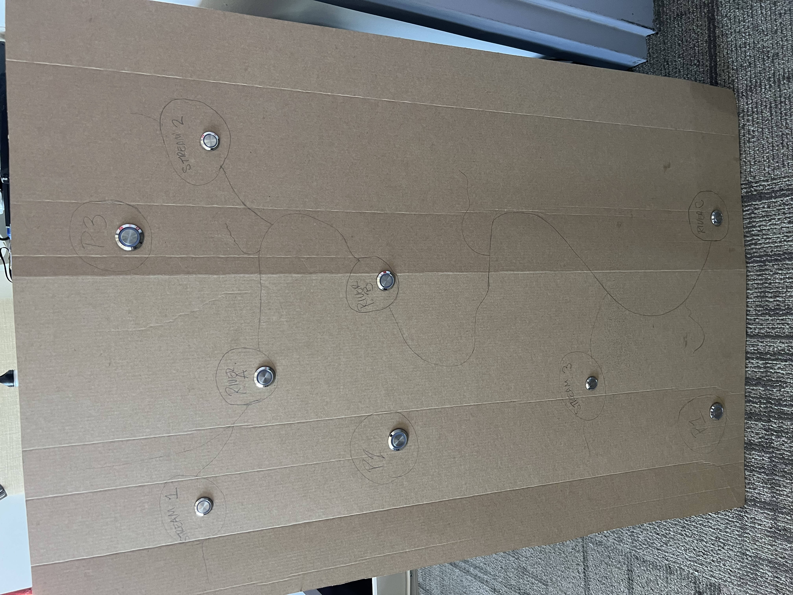
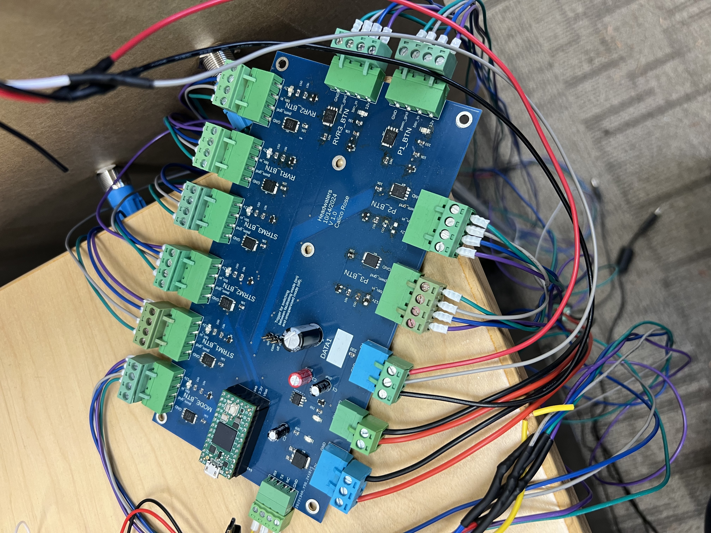
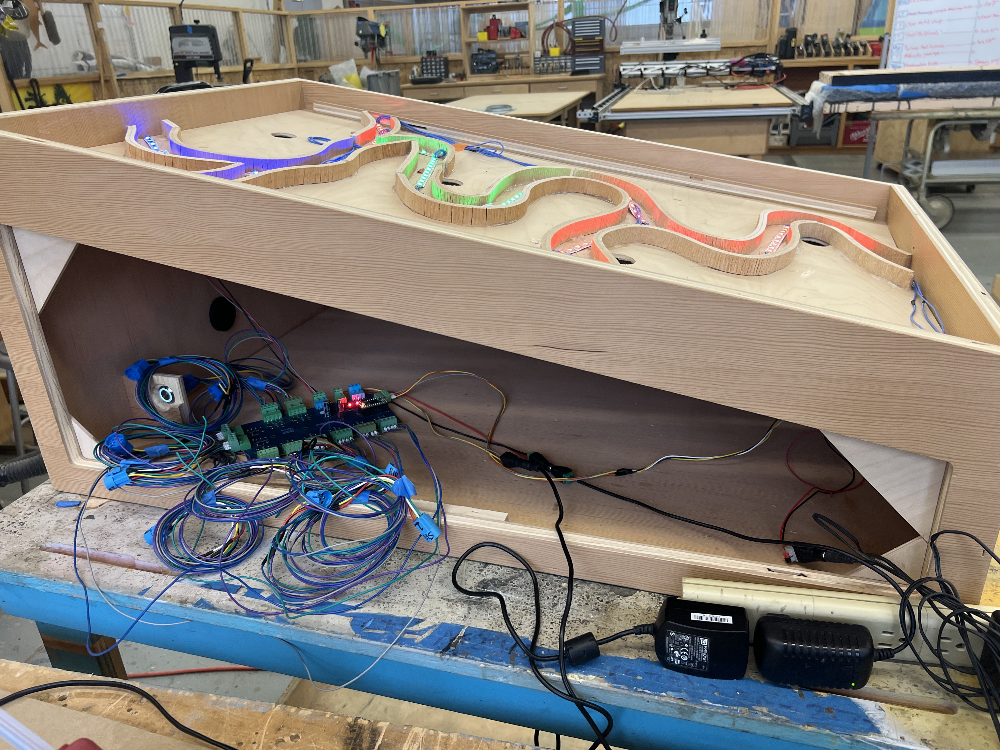

headwaters was created at the oregon museum of science and industry through their fellowship program. it's purpose is to inform visitors about the isotope levels in water as the evelation and seasons change. it is a facilitated exhibit, meaning there is an educator informing the visitors about the experience.

this project incorporates buttons, an led strip divided via the code into separate arrays to simulate separate streams and rivers, a dial to change the weather / season, and a thermal printer. the printer outputs the isotope information for a specific area on the map (chosen by the buttons) that coorelates to different elevations and landscapes depending on the climate (chosen via the dial).

after recieving the information that the graduate student wanted to be included in the exhibit, i designed a prototype of the piece to be created and cut by fabricators. using c++, platformio, and a teensy 4.0, i developed the software and firmware for the exhibit as well as designed and populated the custom circuit board.
each stream and river has it's own individual color assigned based on the climate setting to coorespond with the amount of water in that season.
